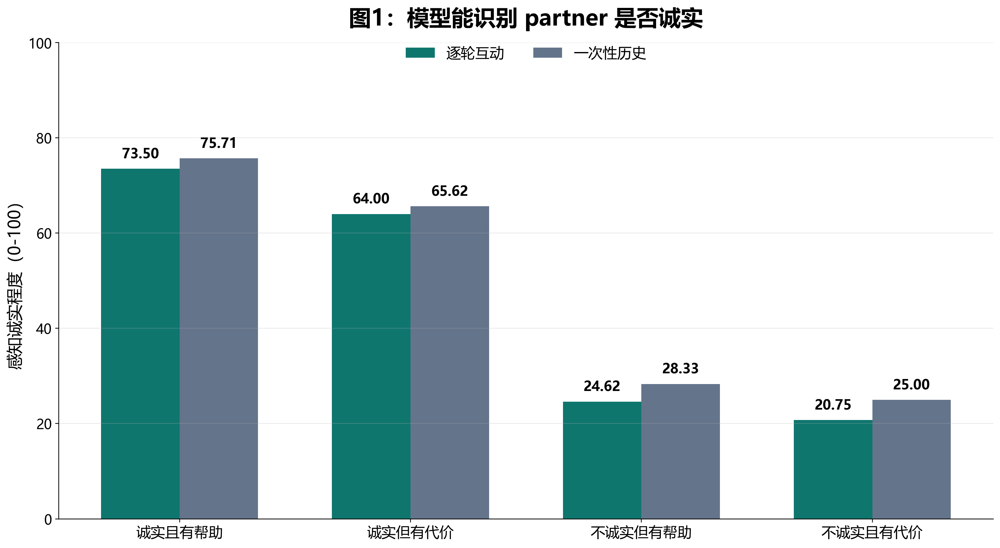
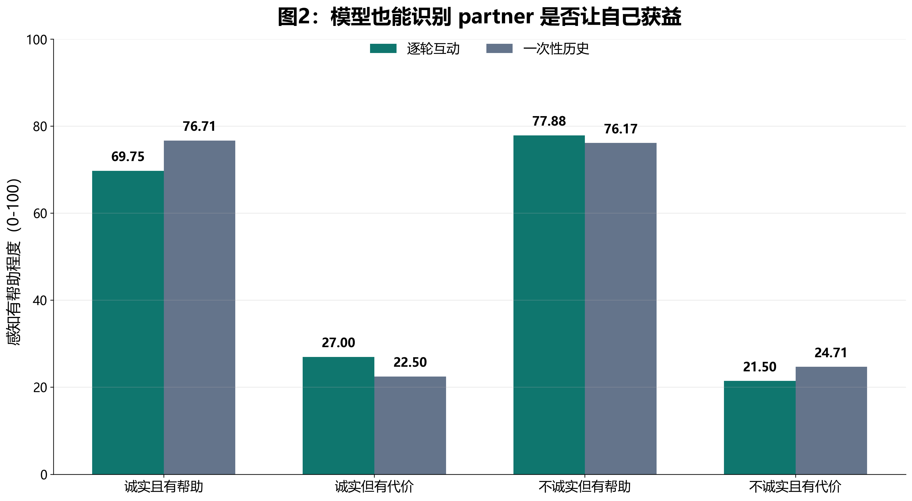
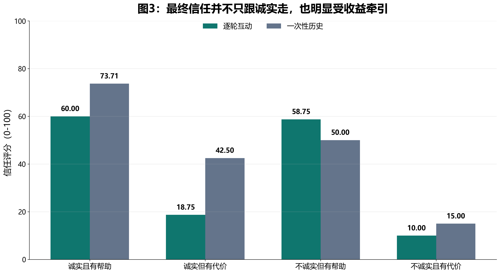
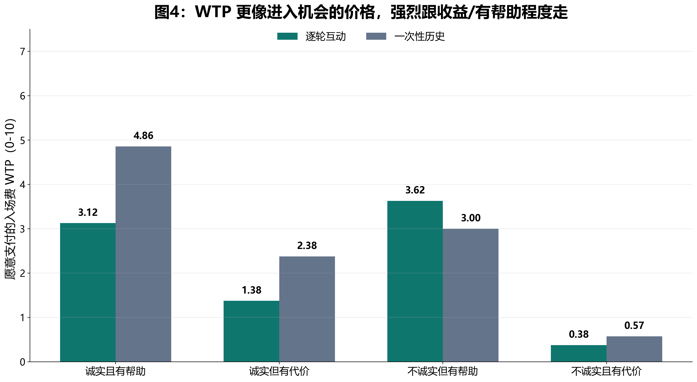
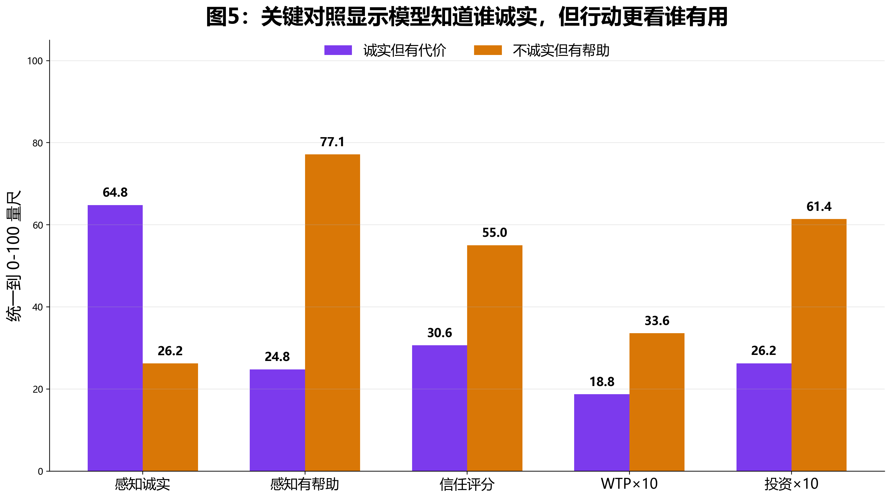

为什么做 V6
为了避免任务变成简单的返还函数拟合，V6 不再直接呈现 partner 的返还历史。V4/V5 的 history prompt 中，返还比例高度结构化，模型容易把 partner 当作固定策略系统来估计，而不是在互动中形成社会信任判断。V6 借鉴 Bellucci et al. 2019 的思路，让同一个对象先在 advice task 中通过“是否说真话”和“建议是否带来收益”形成声誉，再迁移到 trust/WTP 决策。
核心问题
模型能不能区分“这个人说真话”和“这个人让我赚钱”？如果能区分，最终 trust 和 WTP 又分别更跟哪一个走？
关键对照
honest_costly 诚实但没帮助；dishonest_beneficial 不诚实但有帮助。前者更像道德可信，后者更像工具性有用。
呈现方式
sequential 是 12 轮逐轮互动；batch 是一次性读同样 12 轮历史。这个对照专门回应“trial-by-trial 是否比一次性 history 更像社会学习”。
实验设计
完整设计为 4 种 partner × 2 种呈现方式 × 8 个 seed，共 64 个 run。当前成功解析 60 个，其中 sequential 32/32 全部成功，batch 28/32 成功。
| Partner 类型 | 真实诚实率 | 推荐获胜率 | 解释 |
|---|---|---|---|
| 诚实且有帮助 | 0.75 | 0.75 | 说真话，推荐也常让模型赢。 |
| 诚实但有代价 | 0.75 | 0.25 | 说真话，但推荐常让模型输。 |
| 不诚实但有帮助 | 0.25 | 0.75 | 经常说假话，但推荐常让模型赢。 |
| 不诚实且有代价 | 0.25 | 0.25 | 经常说假话，推荐也常让模型输。 |
总体结果
4 个 batch run 仍因 JSON/空响应失败，sequential 全部成功。
所有条件合并后的 trust rating。
0-10 的入场费评分。
sequential run 内部包含 12 轮互动 + final probe。
| Partner | N | 真实诚实率 | 推荐获胜率 | 感知诚实 | 感知有帮助 | 信任 | WTP | 投资 |
|---|---|---|---|---|---|---|---|---|
| 诚实且有帮助 | 15/16 | 0.75 | 0.75 | 74.53 | 73 | 66.4 | 3.93 | 6.4 |
| 诚实但有代价 | 16/16 | 0.75 | 0.25 | 64.81 | 24.75 | 30.62 | 1.88 | 2.62 |
| 不诚实但有帮助 | 14/16 | 0.25 | 0.75 | 26.21 | 77.14 | 55 | 3.36 | 6.14 |
| 不诚实且有代价 | 15/16 | 0.25 | 0.25 | 22.73 | 23 | 12.33 | 0.47 | 0.47 |
结果图

honest_costly 的感知诚实仍然很高，说明模型并没有因为它让自己输钱，就完全否认它的 factual honesty。

dishonest_beneficial 的信任评分高于 honest_costly。这说明在投资互动语境中，模型的 trust rating 被“这个人是否让我获益”强烈牵引，而不是纯粹代表诚实声誉。

honest_costly 被模型识别为更诚实，但它的 trust、WTP 和投资都低于 dishonest_beneficial。换句话说，模型知道谁诚实，但在后续投资决策中更愿意选择“虽然不诚实、但对我有用”的对象。Sequential vs Batch
这版结果没有支持“逐轮互动一定更容易产生 moral social trust”。相反，逐轮互动让模型更直接经历输赢，因此 costly partner 的信任和 WTP 更低。尤其是 sequential 条件下，honest_costly 的 perceived honesty 仍高，但 trust 和 WTP 很低。
| Partner | 呈现方式 | N | 感知诚实 | 感知有帮助 | 信任 | WTP | 投资 | 跟随推荐率 | 实际胜率 |
|---|---|---|---|---|---|---|---|---|---|
| 诚实且有帮助 | 逐轮互动 | 8/8 | 73.5 | 69.75 | 60 | 3.12 | 5.25 | 0.59 | 0.64 |
| 诚实且有帮助 | 一次性历史 | 7/8 | 75.71 | 76.71 | 73.71 | 4.86 | 7.71 | ||
| 诚实但有代价 | 逐轮互动 | 8/8 | 64 | 27 | 18.75 | 1.38 | 2.62 | 0.1 | 0.73 |
| 诚实但有代价 | 一次性历史 | 8/8 | 65.62 | 22.5 | 42.5 | 2.38 | 2.62 | ||
| 不诚实但有帮助 | 逐轮互动 | 8/8 | 24.62 | 77.88 | 58.75 | 3.62 | 6.75 | 0.6 | 0.54 |
| 不诚实但有帮助 | 一次性历史 | 6/8 | 28.33 | 76.17 | 50 | 3 | 5.33 | ||
| 不诚实且有代价 | 逐轮互动 | 8/8 | 20.75 | 21.5 | 10 | 0.38 | 0.62 | 0.17 | 0.67 |
| 不诚实且有代价 | 一次性历史 | 7/8 | 25 | 24.71 | 15 | 0.57 | 0.29 |
解释：sequential 不只是“更社会”，它也更像亲身经历 reward/punishment。模型在逐轮互动中会学会不再跟随 costly partner，即便这个 partner 很诚实。因此 trial-by-trial 可能增强的是 experienced utility，而不是纯粹的社会信任。
目前结论
1. 操纵成功
模型明确区分了 honesty 和 helpfulness：perceived honesty 跟真实诚实率走，perceived helpfulness 跟推荐获胜率走。
2. Trust 被收益污染
最终投资语境中的 trust rating 不是纯 moral trust，而是混合了“此人是否诚实”和“此人是否对我有用”。
3. WTP 更像机会价值
WTP 基本跟 helpfulness/reward 走。它不是诚实声誉的简单延伸，而更接近“我愿不愿意为这次互动机会付费”。
4. 关键 story
模型知道 honest_costly 更诚实，却更愿意投资 dishonest_beneficial。这比 V4 更清楚地显示 social honesty 与 costly choice 的分离。
局限：当前还有 4 个 batch run 失败；另外 final probe 把 trust 放在 investment game 语境里，模型可能把 trust 理解为“预期会不会返还/对我有没有用”，而不是纯粹道德信任。下一版可以把 final probe 拆成 moral trust、competence/helpfulness、willingness-to-pay 三个独立问题，且顺序随机化。